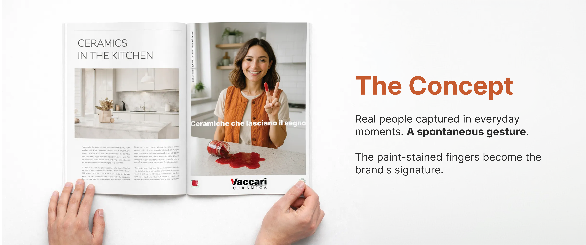

← Back to Projects


Vaccari Ceramica
An integrated advertising campaign built around a simple human gesture. Inspired by the iconic "V" of the Vaccari logo, the campaign transforms paint-stained fingers into a memorable visual signature that celebrates creativity, craftsmanship and everyday life.
